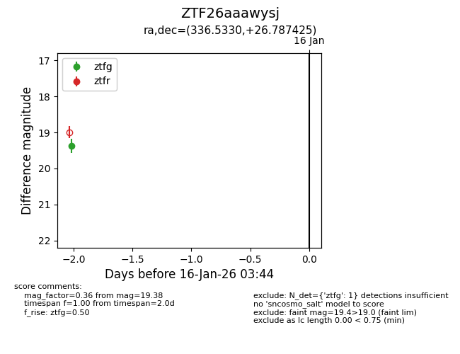
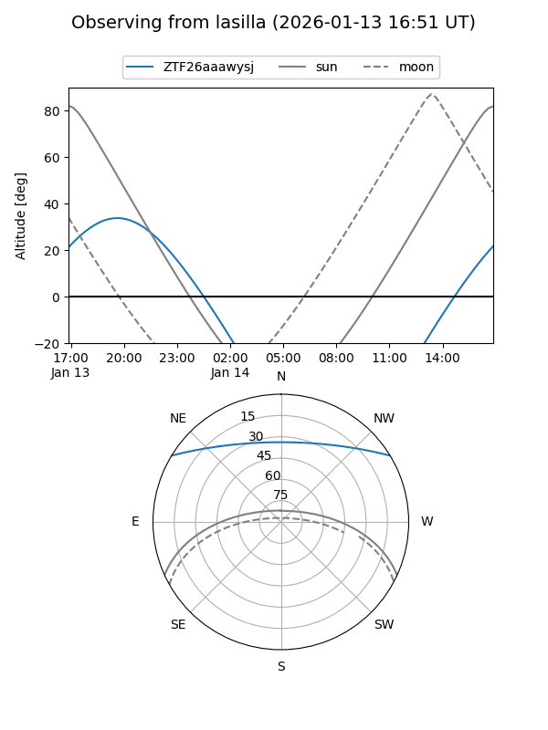
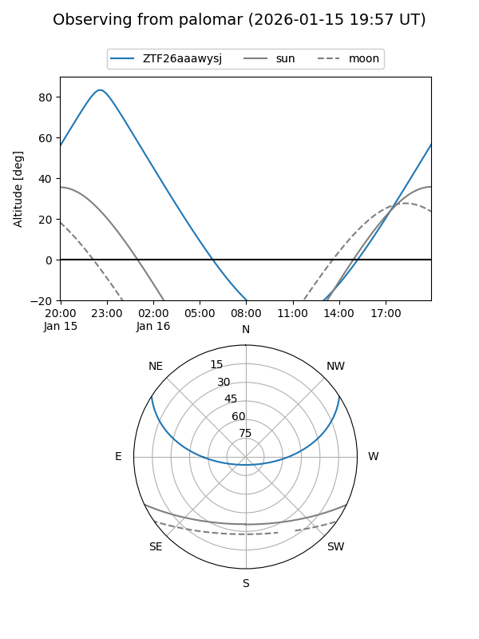

ZTF26aaawysj
Target ZTF26aaawysj at 2026-01-16 03:45
Aliases and brokers:
FINK: link
Lasair: link
ALeRCE: link
alt names
ZTF26aaawysj (ztf,fink_ztf)
Coordinates:
equatorial (ra, dec) = 336.5330,+26.78742
equatorial (HMS+DMS) = 22:26:07.93,+26:47:14.73
galactic (l, b) = (86.9766,-25.75808)
Flags:
Photometry:
last ztfg=19.38
1 ztfg detections
Lightcurve

Visibility


Additional plots